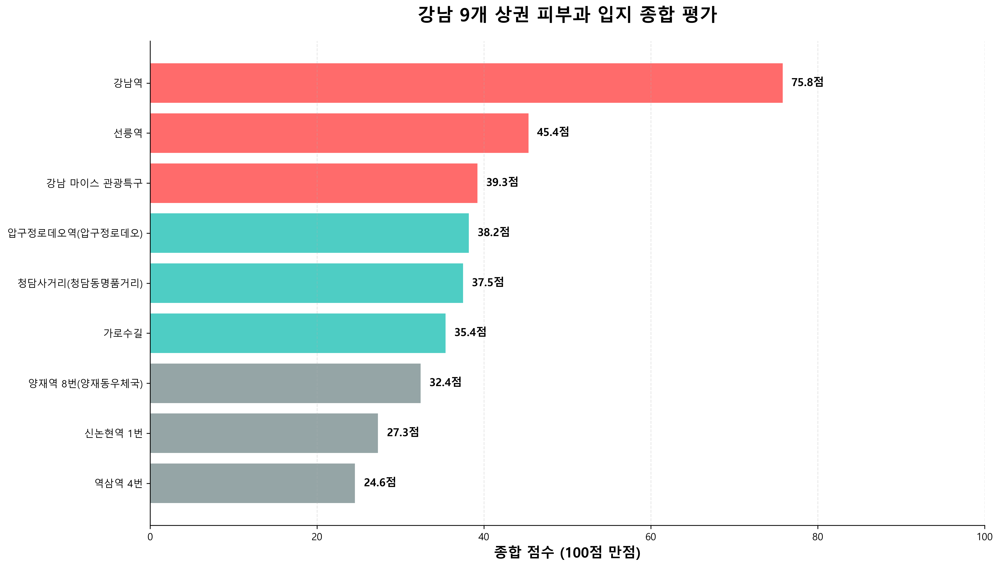
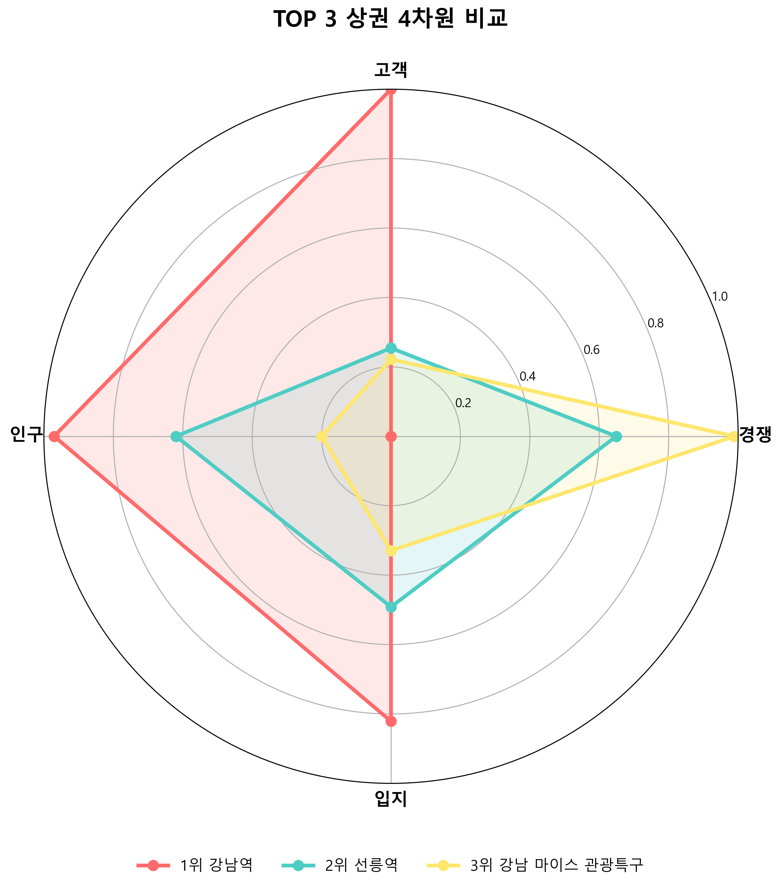
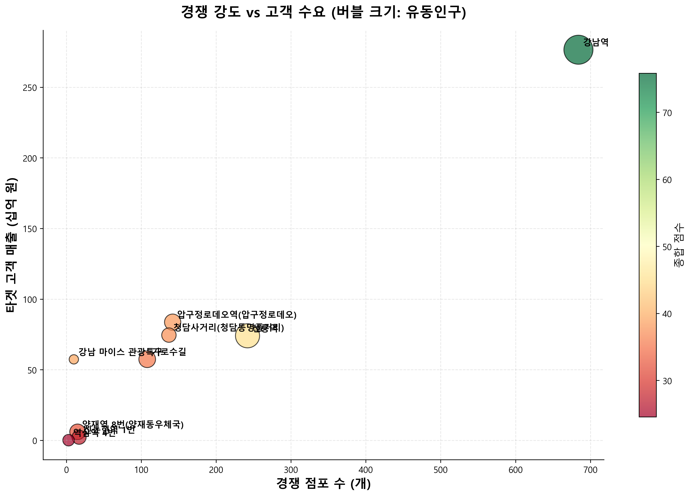
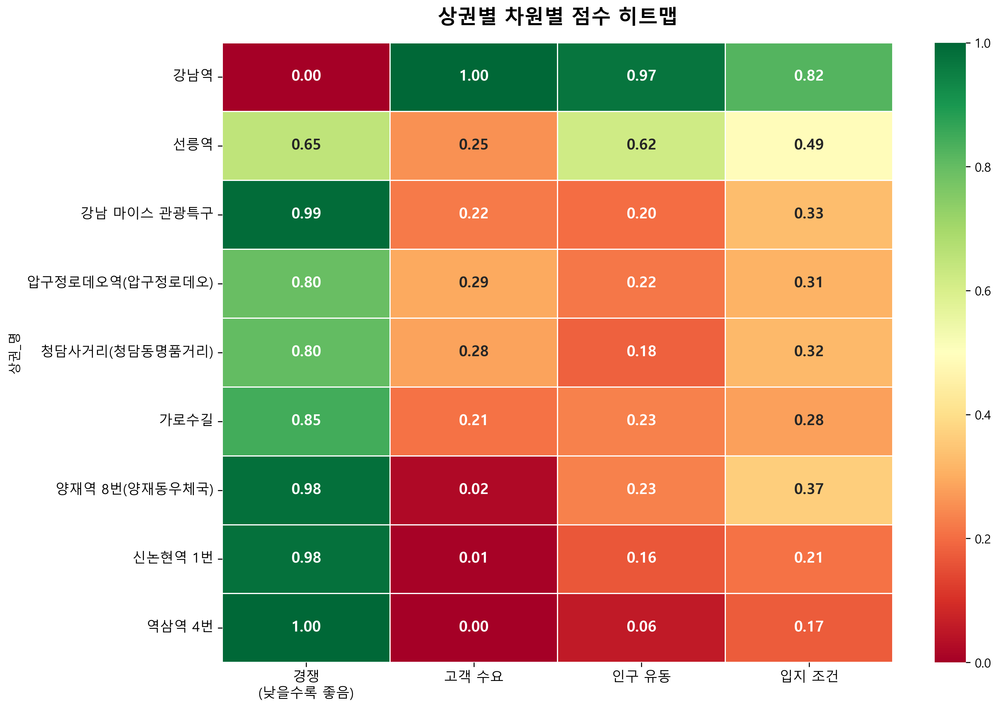
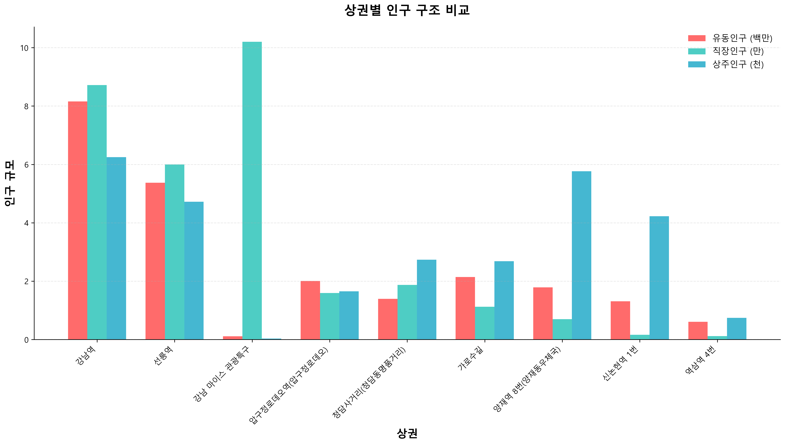

강남 9개 핵심 상권 종합 평가 보고서 (V5.20)
분석 기간: 2022년 ~ 2024년 | 작성일: 2026-02-04
분석 목적: 강남 지역 9개 주요 상권을 대상으로 의원급 피부과 최적 입지를 선정하기 위한 4차원 종합 평가
분석 방법: 경쟁(20%) + 고객(40%) + 인구(20%) + 입지(20%) 가중 합산
🎯 최종 추천: 강남역, 선릉역, 강남 마이스 관광특구
압도적 고객 수요
경쟁 최고 수준
균형 잡힌 지표
안정적 성장 기대
저경쟁 블루오션
니치 전략 필요

* 색상 구분: 빨강(TOP 3), 청록(4~6위), 회색(7~9위)

* 경쟁 점수는 역산(낮을수록 좋음), 나머지는 높을수록 좋음

* 버블 크기: 유동인구 / 색상: 종합 점수


* 단위: 유동인구(백만), 직장인구(만), 상주인구(천)
| 순위 | 상권명 | 종합점수 | 경쟁 | 고객 | 인구 | 입지 |
|---|---|---|---|---|---|---|
| 1 | 강남역 | 75.8 | 0.00 | 1.00 | 0.97 | 0.82 |
| 2 | 선릉역 | 45.4 | 0.65 | 0.25 | 0.62 | 0.49 |
| 3 | 강남 마이스 | 39.3 | 0.99 | 0.22 | 0.20 | 0.33 |
| 4 | 압구정로데오 | 38.2 | 0.80 | 0.29 | 0.22 | 0.31 |
| 5 | 청담사거리 | 37.5 | 0.80 | 0.28 | 0.18 | 0.32 |
| 6 | 가로수길 | 35.4 | 0.85 | 0.21 | 0.23 | 0.28 |
| 7 | 양재역 8번 | 32.4 | 0.98 | 0.02 | 0.23 | 0.37 |
| 8 | 신논현역 1번 | 27.3 | 0.98 | 0.01 | 0.16 | 0.21 |
| 9 | 역삼역 4번 | 24.6 | 1.00 | 0.00 | 0.06 | 0.17 |
| 차원 | 가중치 | 세부 지표 | 세부 가중치 |
|---|---|---|---|
| 고객 수요 | 40% | 타겟 매출(20-40대) | 60% |
| 여성 매출 | 40% | ||
| 인구 유동 | 20% | 유동인구 | 40% |
| 타겟 유동인구(20-40대) | 30% | ||
| 직장인구 | 20% | ||
| 상주인구 | 10% | ||
| 입지 조건 | 20% | 집객시설 수 | 40% |
| 평균 소득 | 30% | ||
| 의료비 지출 | 30% | ||
| 경쟁 환경 | 20% | 의원/피부과 점포 수 (역산) | 100% |